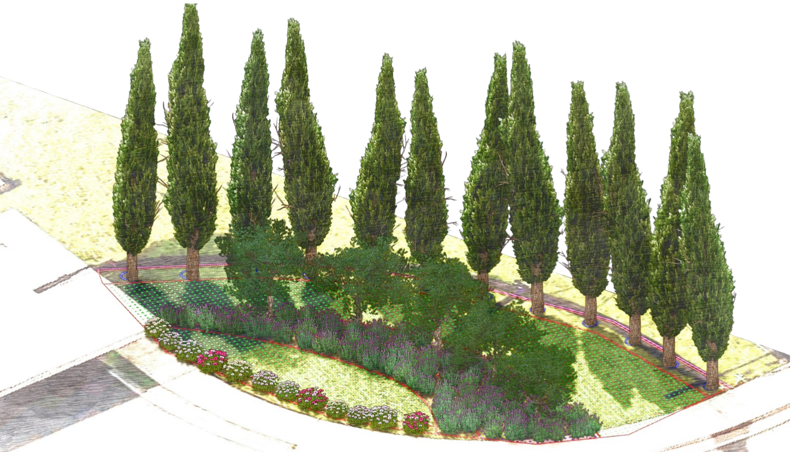

A fachada de um condomínio é o seu cartão de visitas. É o jardim que recebe quem chega e que o morador vê todos os dias ao sair — uma identidade paisagística que se imprime na memória. Esta proposta foi desenvolvida para transformar a fachada do Residencial Florença em um conjunto inesquecível.
Proposta elaborada para
Residencial Florença
Pirassununga · SP · Maio de 2026
Mediterrâneo linguagem ornamental
Cipreste espinha dorsal do jardim
Identidade cartão de visitas
Composição técnica & sensibilidade
Anteprojeto 3D ver antes de plantar
Mediterrâneo linguagem ornamental
Cipreste espinha dorsal do jardim
Identidade cartão de visitas
Composição técnica & sensibilidade
Anteprojeto 3D ver antes de plantar
Gardenia Jardins
Não vendemosjardins. Criamosidentidade.
Parte dessa experiência foi construída ao longo de anos de atuação em Londres, com contato direto com projetos de paisagismo sustentável e práticas inspiradas na permacultura — que se traduzem em escolhas mais inteligentes em campo.
A Gardenia nasce da união entre técnica, experiência e sensibilidade no cuidado com os jardins. Cada espaço verde possui um ritmo próprio — e o paisagismo vai além da estética: trata-se de compreender o ambiente, respeitar os ciclos da natureza e criar paisagens que evoluem ao longo do tempo.
Para o Residencial Florença, o objetivo é claro: criar uma identidade paisagística marcante na fachada principal — que valorize o empreendimento, acolha quem chega e eleve a percepção de todos os moradores sobre o lugar onde vivem.
Técnica com sensibilidade
Conhecimento técnico que serve ao jardim — e ao cliente. Explicamos o que fazemos e por quê.
Olhar de longo prazo
Pensamos em como o jardim vai crescer, evoluir e se adaptar. É paisagismo que dura.
Experiência internacional, raízes locais
Anos de atuação em Londres em projetos de paisagismo sustentável — com o conhecimento de quem conhece o clima, as plantas e o ritmo de Pirassununga.

Conceito do Jardim
A Toscanana fachada doFlorença.
Volumetrias verticais marcantes, flores de solo, arbustos aromáticos. Sofisticação atemporal por linguagem mediterrânea.
A inspiração é mediterrânea. A execução é técnica. O resultado é inconfundível. A proposta parte de uma linguagem ornamental que remete ao sul da Europa — volumetrias verticais marcantes, flores de solo, arbustos aromáticos e o verde profundo dos ciprestes como espinha dorsal de toda a composição.
A escolha das espécies foi pensada para transmitir sofisticação visual sem abrir mão da funcionalidade. Cada planta tem seu papel na composição — e juntas criam uma identidade paisagística que amadurece e se consolida ao longo do tempo.
O projeto contempla a reorganização completa da área denominada "Ilha 01". O resultado: uma fachada que não parece apenas cuidada. Parece projetada.
Volumetria vertical marcante
Ciprestes Italianos como espinha dorsal — altura, presença e identidade inconfundível.
Camada arbustiva ornamental
Lavandas e oliveiras em composição de médio porte — textura, aroma e movimento.
Camada florida de fechamento
Lantanas e primaveras com coloração sazonal — exuberância que evolui ao longo do ano.
Integração com a arquitetura
Composição harmonizada com a identidade visual e estrutural do empreendimento.
Desenvolvimento ao longo do tempo
Paisagismo que amadurece, se consolida e valoriza o espaço com os anos.
·Galeria · Anteprojeto 3D
03 enquadramentos · Estúdio Gardenia
01 — Fachada principal
02 — Vista lateral
03 — Composição ornamental
Anteprojeto 3D
Ver antesde plantar.
O condomínio analisa e aprova a proposta com clareza visual total — antes que uma só espécie seja removida.
O anteprojeto tridimensional é desenvolvido para que o condomínio possa analisar e aprovar a proposta com total clareza visual — antes de qualquer execução. As imagens apresentadas nesta proposta são parte desse processo.
Organização espacial das espécies
Distribuição estratégica conforme a geometria e o uso do espaço disponível.
Estudo de volumetria vegetal
Composição tridimensional de alturas e massas para equilíbrio visual perfeito.
Integração com a arquitetura
Harmonização entre paisagismo, circulação e estrutura existente.
Relatório técnico paisagístico
Documentação com diretrizes, espécies selecionadas e recomendações de manutenção.
04Implantação Paisagística
Mais de 100 espécies. Uma composição.
A proposta contempla a distribuição estratégica de espécies ornamentais ao longo das áreas de implantação — priorizando composição visual, integração paisagística e desenvolvimento adequado de cada espécie ao longo do tempo.
Cipreste Italianovolumetria e identidade
Lavandastextura, aroma e cor
Oliveiras ornamentaissofisticacao e movimento
Lantanas Arco-Íriscamada florida
Primaverasexuberancia sazonal
05Fases do Projeto
Do primeiro olhar a entrega final.
Três etapas integradas, transparentes e sem surpresas para o condomínio. Do estudo preliminar à entrega técnica.
01
Fase 1 · Estudo
Estudo Preliminar.
Análise do espaço, condições de luz e uso da área. Aqui entendemos o que o espaço pede antes de propor qualquer solução.
01Análise do ambiente e incidência solar
02Definição das diretrizes conceituais
03Apresentação das referências paisagísticas
02
Fase 2 · Planejamento
Planejamento & Anteprojeto 3D.
Desenvolvimento técnico completo — composição dos canteiros, planejamento e entrega do anteprojeto 3D para validação visual junto ao condomínio.
04Modelagem tridimensional da proposta
05Estudo volumétrico e cromático final
06Relatório técnico paisagístico
03
Fase 3 · Implantação
Implantação do Jardim.
Execução completa — remoção das plantas existentes, preparação do solo, plantio das +100 plantas ornamentais e composição final com acabamento.
07Remoção e preparação dos canteiros
08Plantio estratégico das espécies
09Composição final e entrega técnica
06Investimento
O jardim que o condomínio vai ter por anos.
Investimento integral, sem custos ocultos. Tudo o que é necessário para entregar o conjunto pronto já está incluído.
Para a implantação completa da fachada paisagística
R$24.900
Investimento total · Parcelado em 3x
Pagamento à vistaR$ 22.410
10% OFF · economia de R$ 2.490
* Entrada de 50% para aquisição das plantas e materiais. Saldo dividido em 2 parcelas ao longo da execução.
Entregas inclusas
✓Anteprojeto paisagístico tridimensional completo
✓Relatório técnico paisagístico com diretrizes
✓Remoção das plantas existentes da Ilha 01
✓Correções pontuais e preparação dos canteiros
✓Mais de 100 plantas ornamentais
✓Fornecimento completo das espécies vegetais
✓Implantação com distribuição estratégica
✓Execução técnica, acabamento e orientações
Não inclusos
✕Reformas estruturais (calçadas, muros, drenagem)
✕Iluminação paisagística (orçamento à parte)
✕Mobiliário externo e elementos decorativos
✕Sistema de irrigação automatizada
✕Mudas e reposições após a entrega técnica
✕Manutenção mensal (contratada à parte)
* O plano de manutenção mensal está descrito no capítulo a seguir.
Plano de Manutenção
O jardim foi implantado. Agora ele começa a crescer.
A manutenção é a continuidade natural do projeto — é ela que transforma uma implantação em um jardim consolidado, com identidade e presença ao longo dos anos.
Período de adaptação
Os primeiros 30 dias.
3 visitas semanais
R$ 2.160/mês
Itens exclusivos do 1º mês
Acompanhamento técnico do desenvolvimento vegetal
Monitoramento do desenvolvimento de cada espécie
Manejo ornamental preventivo
Ajustes estéticos e organização geral da composição
Itens compartilhados
Podas ornamentais — manutenção de forma e volumetria
Monitoramento fitossanitário
Preservação da identidade visual do projeto
Limpeza e alinhamento dos canteiros
Acompanhamento do desenvolvimento ornamental
Período regular
O jardim em plena vida.
2 visitas semanais
R$ 1.590/mês
Podas ornamentais — manutenção de forma e volumetria
Monitoramento fitossanitário
Preservação da identidade visual do projeto
Limpeza e organização periódica dos canteiros
Acompanhamento do desenvolvimento ornamental
Um jardim bem cuidado valoriza o condomínio todo mês.
Residencial Florença
A fachada que o Florença vai ter por anos começa agora.
Estamos à disposição para esclarecimentos, ajustes e visita técnica. O próximo passo é seu.